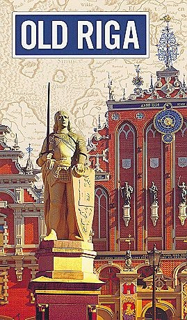

About me
My name is Daiga Zariņa and I am a professional guide in Riga, Latvia. I have worked as a tour guide in various travel agencies for more than 35 years. The work experience includes working with tour groups, cruise groups, individual tourists, as well as official government delegations. I have also experience in organizing different international events such as various conferences and congresses. I have professional license certificate and licences to guide at various historic places in Latvia (including Riga Dom Cathedral, Museum of History and Navigation, Art Nouveau Museum, House of Blackheads, the Open- air museum, Rundāle Palace and Cēsis). My mother tongue is Latvian, but I am also fluent in English and Russian. During the off season I teach English language at Albert Collage Tourism Department.
My book Old Riga is written as a small self-guiding book, which will guide you to all the memorable places in the Old Town. The tour will start from Albert Square, it was from here where River Riga formed a natural port and Bishop Albert acquired the settlement. From there you will explore Old Town from middle ages up till modern times. You will learn how Riga became one of the most influential city in the region, how different rulers changed the city and how during the Soviet occupation the city. The book was republished in 2002 and is available in most major bookshops. It has been translated into English, German and Russian.
Neil Taylor, UK
I cannot think of bringing groups to Riga without her constant presence. However demanding the clients, she always comes up trumps. She is as crucial part of the tour as any site that we visit.
Lida Skrzypczak,USA
Daiga is extremely knowledgeable about the Baltics, and Latvia in particular. I got to know her through a Baltic tours package which included Lithuania and Estonia as well. While other guides certainly knew their stuff, Daiga stands out because of her hearty sense of humor, a little mischievous streak, and for making you feel like you're just traveling along with another good family friend. I did, however, also expect her to give me a quizz at the end of the day on all the mounds of information she had forced into me. She's a delight!